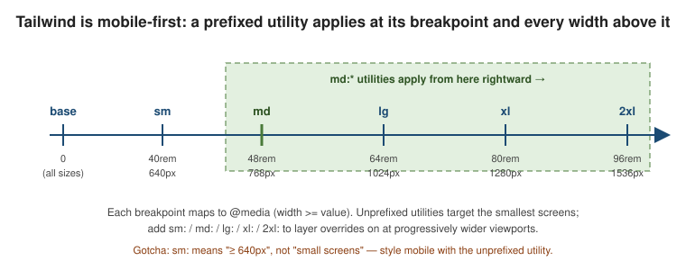

Responsive Design
|
This content was generated with the assistance of AI and should be verified against the official documentation before being relied on in production. |
Responsive utilities in Tailwind are ordinary utilities with a breakpoint prefix — md:flex, lg:grid-cols-3 — each compiling to a min-width media query. The full reference is
Responsive design.
Mobile-first
An unprefixed utility applies at every screen size. A prefixed utility applies at its breakpoint and every width above it. So you write the small-screen layout with unprefixed utilities and layer overrides on for wider viewports.
<!-- full width on phones, half at >=640px, one-third at >=1024px -->
<div class="w-full sm:w-1/2 lg:w-1/3">...</div>
<!-- stack on mobile, row from md up -->
<div class="flex flex-col md:flex-row">...</div>The common mistake is reaching for sm: to style phones: sm: means "at 640px and up", so it does not
target small screens — it excludes the smallest ones. Put mobile styles in the unprefixed utility and use
sm: / md: / … only to change things on larger screens.
<!-- WRONG: text-center never applies below 640px, and applies on desktop too -->
<div class="sm:text-center"></div>
<!-- RIGHT: centre by default, left-align from small screens up -->
<div class="text-center sm:text-left"></div>Default breakpoints
Five breakpoints ship by default. Their values are defined as rem and each maps to a min-width media
query (Tailwind v4 emits the modern range syntax @media (width >= ...)).
| Prefix | Value | Pixels (16px root) | Media query |
|---|---|---|---|
|
40rem |
640px |
|
|
48rem |
768px |
|
|
64rem |
1024px |
|
|
80rem |
1280px |
|
|
96rem |
1536px |
|
Targeting a single range
To apply utilities only up to a breakpoint, use the max-* variants; stack a min and a max variant to
target one band only. For a one-off value that is not in the scale, use an arbitrary breakpoint in square
brackets.
<!-- only below md -->
<div class="max-md:hidden">visible from md up</div>
<!-- only in the md..lg band (>=768px and <1024px) -->
<div class="md:max-lg:bg-sky-100">...</div>
<!-- arbitrary breakpoints -->
<div class="min-[720px]:grid max-[600px]:flex-col">...</div>Customizing breakpoints with --breakpoint-*
In v4 the breakpoints are theme variables, so you customize them in CSS with @theme — no
tailwind.config.js needed. Add a variable to create a new breakpoint prefix; set one to initial to remove
it.
@import "tailwindcss";
@theme {
--breakpoint-xs: 30rem; /* new: enables xs:* utilities */
--breakpoint-3xl: 120rem; /* new: enables 3xl:* utilities */
--breakpoint-2xl: initial; /* remove the default 2xl breakpoint */
}<div class="grid grid-cols-1 xs:grid-cols-2 3xl:grid-cols-6">...</div>Because they are plain custom properties, the values are also readable at runtime via
getComputedStyle(document.documentElement).getPropertyValue('--breakpoint-md'). See
customizing your theme and
Theme variables.
Container queries
Container queries are built into Tailwind v4 — no @tailwindcss/container-queries plugin. Mark an element a
query container with the @container utility, then style its descendants with @-prefixed variants that
react to the container’s width instead of the viewport’s.
<!-- react to the container box -->
<div class="@container">
<div class="flex flex-col @md:flex-row @lg:gap-8">...</div>
</div>
<!-- max and range container variants -->
<div class="@container">
<div class="@max-md:hidden @sm:@max-lg:bg-sky-50">...</div>
</div>
<!-- named containers to disambiguate nesting -->
<div class="@container/main">
<aside class="@container/side">
<div class="@lg/main:grid @sm/side:flex">...</div>
</aside>
</div>
<!-- arbitrary container breakpoint, and container-query length units -->
<div class="@container">
<div class="@min-[475px]:columns-2 w-[50cqw] h-[30cqh]">...</div>
</div>The @sm / @md / @lg container sizes have their own scale (--container-* theme variables, e.g. @sm
= 24rem), independent of the viewport breakpoints. cqw and cqh are CSS length units equal to 1% of the
query container’s width and height.
breakpoint prefix reacts to the window"] CB[Nearest @container ancestor width] --> CQ["@md:flex-row
container variant reacts to that box"]
A breakpoint prefix like md: always asks "how wide is the window?"; a container variant like @md: asks
"how wide is my container?", so the same component adapts correctly whether it sits in a wide main column or a
narrow sidebar. See Container queries.
How the generated CSS is ordered
Breakpoint rules only work because Tailwind sorts them. Compiling max-lg:p-5 max-sm:p-9 xl:p-1 sm:p-2 lg:p-3
md:p-1 max-md:hidden shows the order in the stylesheet, regardless of the order in the markup:
| Position | Rules |
|---|---|
First |
The |
Then |
The |
Last |
|
Two things follow. A wider min breakpoint always overrides a narrower one when both match, which is what makes
"mobile first" work without any !important; and max-* rules sit before the min rules, so on an element
that has both max-md:p-9 and lg:p-3 the rules never compete — they match in different ranges.
Deep dive: the Acme page across three widths
The page from Building a Page with Utilities changes in four places as the window grows. Reading its class lists from left to right, the unprefixed utility is the phone layout and every prefixed utility adds a change.
<!-- 1. navigation: a menu button on phones, inline links from sm -->
<button class="sm:hidden" aria-label="Menu">☰</button>
<nav class="hidden sm:flex sm:gap-6">...</nav>
<!-- 2. hero: less padding on phones, more as the window grows -->
<section class="px-6 py-12 sm:py-16 lg:py-24">
<!-- 3. headline: fluid steps -->
<h1 class="text-3xl sm:text-4xl lg:text-5xl">Ship your site faster</h1>
</section>
<!-- 4. feature grid: 1, 2, then 3 columns -->
<ul class="grid gap-6 sm:grid-cols-2 lg:grid-cols-3">...</ul>The three leaves are the only states the page has, which is a good sign: every extra breakpoint you add multiplies
the combinations you have to test. Prefer fewer, larger steps, and let content (max-w-3xl, flex-wrap,
minmax() grids) absorb the rest.
Fluid values instead of steps
When a value should change smoothly rather than jump, use an arbitrary clamp() value and keep the breakpoints for
structural changes only:
<h1 class="text-[clamp(2rem,1.2rem+3vw,3.5rem)] font-extrabold">Ship your site faster</h1>The class compiles as written (Tailwind escapes the commas and the plus sign in the selector), and the headline now scales between 2rem and 3.5rem with no breakpoint at all.
Deep dive: making the feature card container-aware
The card is placed in a grid whose columns are sometimes narrow (three across at lg) and sometimes wide (a single
full-width column on a phone in landscape). A viewport breakpoint cannot know which, because the window is the same
in both cases. A container query can:
<ul class="grid gap-6 sm:grid-cols-2 lg:grid-cols-3">
<li class="@container">
<article class="flex flex-col gap-2 rounded-xl border p-6
@md:flex-row @md:items-center @md:gap-6 @lg:p-8">
<h3 class="font-semibold">Fast</h3>
<p class="text-sm text-gray-600">Only the CSS you use is generated.</p>
</article>
</li>
</ul>The li is the query container. The article stacks its title and text while the li is narrower than 28rem
(@md), switches to a row from 28rem, and gains padding from 32rem (@lg). Compiled, these become
@container (width >= 28rem) { ... } and @container (width >= 32rem) { ... } rules, so the same component works in a
sidebar, a grid cell, or the full width of the page without knowing where it is.
An element cannot query its own size. Put @container on an ancestor of the element you restyle, never on the
element itself.
|
Choosing between a breakpoint and a container query
Use a viewport breakpoint (md:) when |
Use a container variant (@md:) when |
|---|---|
the change is about the page — navigation, the number of grid columns, the sidebar |
the change is about a component that can live in several places — a card, a media object, a widget |
there is one place the layout is decided |
the same markup is reused in layouts of different widths |
Adding a breakpoint to the Acme theme
If the design needs a small step between phones and sm, add it once in @theme and the xs: and max-xs:
variants exist everywhere. Compiling xs:text-3xl after --breakpoint-xs: 30rem produces
@media (width >= 30rem), sorted before sm.
@import "tailwindcss";
@theme {
--breakpoint-xs: 30rem;
}Visualizing the breakpoint scale

Reading the line left to right shows the mobile-first rule: an unprefixed utility covers the whole line, and each prefixed utility switches on at its tick and stays on for every wider viewport to the right.
Related pages
-
Hover, Focus, and Other States — responsive prefixes are one family of variants and stack with the rest.
-
CSS Custom Properties and Media Queries — the underlying CSS media queries and
@containerat-rule. -
Layout: Float, Flexbox & Grid — Flexbox and Grid, the layout primitives these breakpoints switch between.